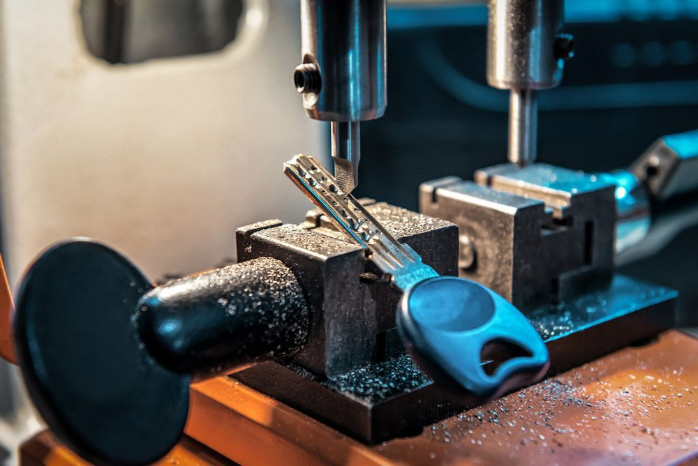
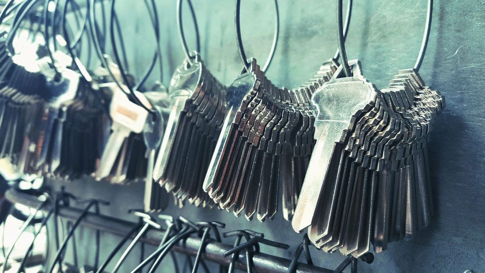
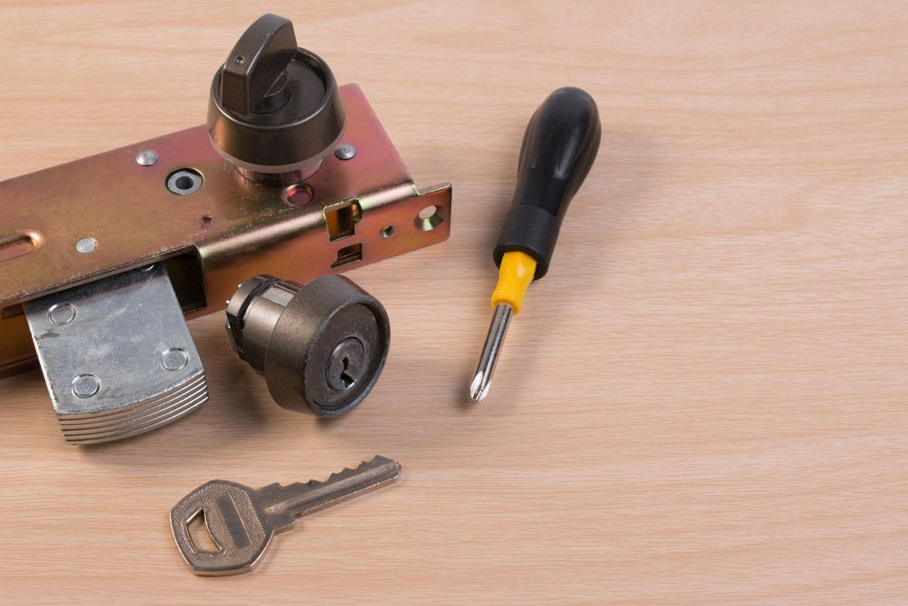

On this page
AT A GLANCE
At SPL Security Solutions, we understand that security needs are not one size fits all.
Get A Free Quote Now!

Residential, Auto & Commercial Locksmithing
At SPL Security Solutions, we understand that security needs are not one size fits all. That's why our comprehensive suite of locksmith services caters to the unique requirements of our Coomera community. Whether you need help securing your home, business or vehicle, our team has the expertise and technology to provide you with unbeatable solutions.
Our range of services for Coomera homeowners includes lock replacements, key duplication and 24/7 emergency response. Business owners benefit from our high-security solutions including restricted key systems, access control and monitoring capabilities. For car owners, our automotive locksmith services include key and fob replacements, broken key extraction, transponder key cutting and so much more.
For more information on our locksmith services, call (07) 5588 8111.
Coomera residents know they can count on us for comprehensive residential locksmith services that provide unbeatable security. We carry out professional lock installations, repairs and rekeying to keep your home safe. Plus, our convenient key duplication service means you'll always have a spare key when needed. Plus, our emergency lockout support is just a call away.
Coomera businesses can rely on our commercial locksmith services to ensure their premises are well-secured. We undertake thorough security assessments before implementing high-quality lock installations, master key systems and access control solutions as required. Our team is also available for emergency assistance around the clock in case of a lock out or break-in.
If you're in need of an automotive locksmith in Coomera, our team is here to help. We offer key replacements, duplications and transponder programming services for all types of vehicles. Whether you need a spare or have lost your key, we can assist. We also provide 24/7 emergency assistance for those unexpected lockouts!
The implementation of restricted key systems in Coomera represents a shift in security management for local businesses and organisations. By harnessing the power of patented technology to prevent unauthorised copying of keys, these systems provide a fortress of security. Customised to meet the precise needs of each client, our solutions ensure that access is meticulously controlled.
In Coomera, we offer a range of safes designed to meet varying security needs. Our selection includes different sizes and locking mechanisms to cater to both personal and business requirements. In addition to installation services, we also provide ongoing maintenance and emergency unlocking assistance. Keep your valuables and confidential documents secure with our high-quality safes.
Don't risk the security of your property in Coomera. Our integrated security systems offer advanced technology and features to protect against potential threats. From CCTV cameras and alarm systems to access control and intercoms, we offer a range of solutions tailored to meet diverse security needs and budget constraints. Our team can help you choose the most effective combination of products for optimal protection and easy use.
Coomera residents and businesses can choose from our lock hardware including heavy-duty deadlocks, secure cylinder locks and user-friendly keyless systems. Our options prioritise a balance of protection and ease of use.
In Coomera, we supply door hardware such as robust hinges, modern handles and durable closers. These products are designed to enhance the longevity, looks and functionality of your doors.
We provide high-quality door hardware, from fire-rated components to sleek closers and elegant handles, ensuring both functionality and style for any space in Coomera.
24/7 Emergency Locksmith Services
Emergencies never seem to happen at a convenient time, which is why our team at SPL Security Solutions offers 24/7 emergency locksmith services to Coomera residents. Whether you're locked out of your home or need urgent lock repairs after a break-in, our team is ready to assist with prompt response times and professional solutions.
In case of attempted or actual intrusion, our team can assess your property and provide necessary repairs or replacements to secure your entry points. Our mobile vans are equipped with the latest tools and technology, allowing us to provide on the spot lock replacements, rekeying and more. Reach out to our team for all your emergency locksmith needs.

Contact Details
24/7 Emergency Locksmiths or Security Tech


Trading Hours
Retail Shop

Frequently Asked Questions
-
What does it mean for a lock to be bump proof?
A bump proof lock is designed to resist lock bumping, a technique where a special key is inserted into the lock and then tapped or "bumped" to align the lock pins and open the lock. Bump proof locks often feature specialised pin designs or mechanisms that prevent the pins from moving in unison when bumped, providing enhanced security against this form of lock picking.
-
What is the difference between rekeying and changing a lock?
Rekeying involves changing the inner workings of an existing lock so it can be operated by a new key. This is a cost-effective option if the lock is still in good condition but you need to change access. Changing a lock, however, means replacing the old lock with a new one, which might be necessary if the lock is damaged or you want to upgrade your security.
Locksmith & Security Solutions Gold Coast, Brisbane & Northern NSW